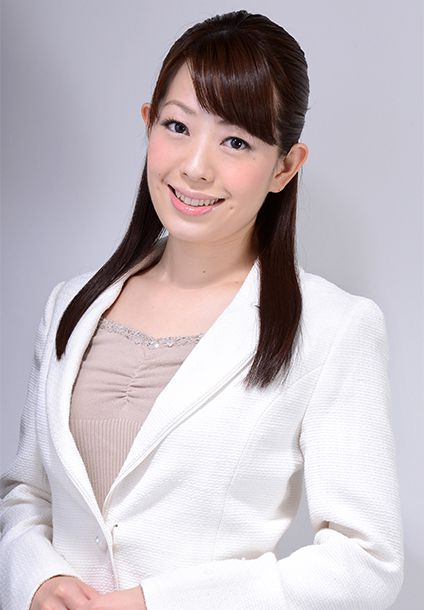

PROFILE
島崎愛弓



島崎愛弓Ayumi Shimazaki
| カテゴリ | MC/司会 |
|---|---|
| 身長 | 163 |
| 趣味 | スポーツ観戦、アクセサリー作り |
| 特技 | 合気道 |
| 資格 | 普通自動車運転免許
中型二輪運転免許 食育インストラクター |
経歴
ナレーション
- ビジネスブレークスルー大学短期講座 TVcm
- ビジネスブレークスルー大学英語教材 TVcm
オンライン※zoom
- 内閣府主催 探Q！RESAS成果発表会
- 日経Fintech Conference
- Oracle Cloud Days
- Outsystemsカスタマーカンファレンス
- Outsystems Japan Innovation Award
- 日本M&Aセンター主催 日本型ブリッツスケールメソッド×業界再編サミット
オンライン※その他
- DellTechnologies新製品発表会
- 令和２年度林野庁補助事業成果報告会
- パナソニックプライベートショー
- ホンダレーシングサンクスデー公式YouTube配信
- レジャーチャンネル公式YouTube配信
サーキットMC
- 2018 SUPER GT/ホンダ
- 2017、2016 鈴鹿8耐/スズキ
- 2017、2016 MotoGP日本グランプリ/スズキ
- 2017、2016 SUPER GT/ヨコハマタイヤ
場内アナウンス
- モータースポーツジャパン
- Honda CBオーナーズミーティング
- Honda DREAM Festa
- グリッドサーキットミーティング
キャスター/リポーター
- スカパー！レジャーチャンネルキャスター（2016年6月～現在）
- ビジネスブレークスルー大学web講座キャスター
- 8speed.netリポーター
- 1to8.netリポーター
式典/セミナー
- 日経BP社主催各種セミナー
- ガートナージャパン主催各種セミナー
- カスペルスキー社主催各種セミナー
- Honda Meeting
- sybouzu.comカンファレンス
- vForum
- SAP Forum
- Intel IOT Asia
- KPMG GJPフォーラム
- Airレジカンファレンス
- 順天堂大学女性研究者研究活動支援シンポジウム
- バーディーグループ社員総会
- NTT東日本バドミントン部地域ファン感謝祭
- ケイトスペードイベント
- ニューバランス BEAT STUDIUMプレス発表会
トークショー
- 井岡一翔・近藤真彦・片山右京・坂東正敬・関口雄飛・国本雄資・佐々木大樹・柳田真孝・谷口信輝・片岡龍也・黒澤治樹・蒲生尚弥・坂田和人・長島哲太・岡崎静夏・名越哲平・erika・東国原英夫・野沢和香 他多数
展示会ナレーター
- 東京モーターショー
- 東京オートサロン
- 人とくるまのテクノロジー展
- CP+
- 国際福祉機器展
- モダンホスピタルショウ
- 統合医療展
- PV EXPO
- ENEX
- 東京ガス熱電プラザ
- 京葉ガスプライベートショー
- 地方自治情報化推進フェア
- 国際ロボット展
- 東京おもちゃショー
- 東京ブライダルフェスタ
- ニコニコ超会議
- ジャパンパック
- スーパーマーケットトレードショー
- フードシステムソリューション
- ツーリズムEXPO
- リテールテックジャパン
- IT Pro EXPO
- 機械要素技術展
- インターロップ
- 自動車部品加工EXPO
- 国際次世代農業EXPO
- フラワーガーデンショー
- 朝日すまいづくりフェア
- ジャパン建材展
- 住まいの耐震博覧会
- NHK技研公開
- パナソニックプライベートショー
- 大塚商会プライベートショー
- オリンパスプライベートショー